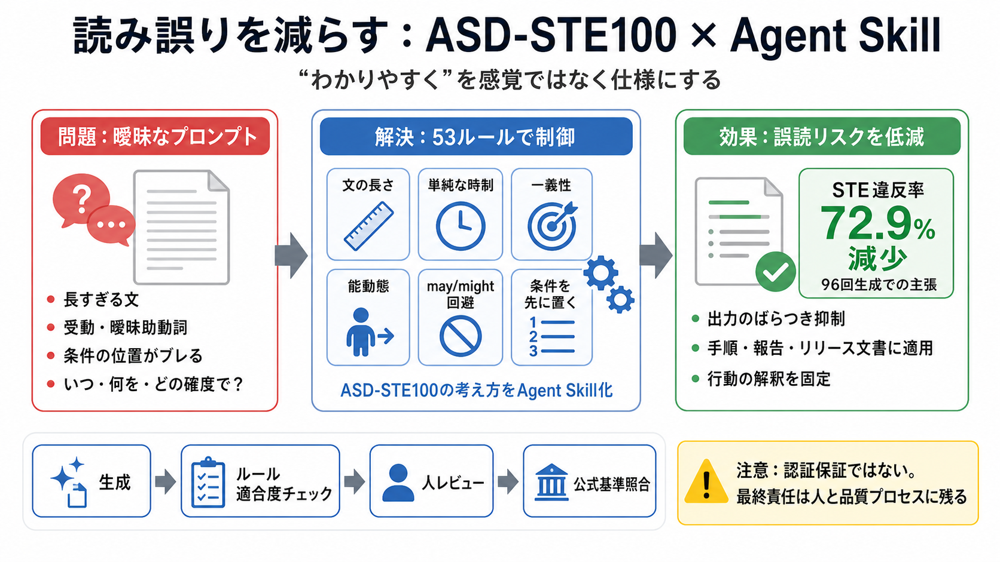

The Complete Guide to Building Skills for Claude
1. Host on GitHub – Public repo for open-source skills – Clear README with installation instructions – Example usage and…

LLMの「それっぽい文章」の癖を、航空業界の統制言語 ASD-STE100（Simplified Technical English）に寄せて抑える仕組みです。
一般的なプロンプトは主観語（例：「わかりやすく」）になりがちで、LLMのばらつきで長文・曖昧表現・条件の誤配置が起きます。
AminBlg/SimpleEnglish は、ASD-STE100の考え方を「53の番号付きルール（9セクション）」としてLLM出力に適用するエージェント・スキルです。
READMEでは 6種類のClaudeモデル × 8種類のタスク × 2条件、合計96回の生成を行い、STE違反が「1単語100語あたり72.9%減少」とされています。
エラーメッセージ、ランブック、インシデントレポート、リリースノート、AGENTS.md 等の手順文に向けて、適用の仕方（use-cases等）が想定されています。
ASD-STE100は、文の長さ・能動態・時制・曖昧助動詞回避・条件位置などをルール化しているため、LLMに従わせやすく出力のばらつきを減らせます。
このスキルは ASD-STE100 の“認定（certification）”を保証しません。語彙辞書や厳密判断が絡むため、完全準拠を自動で担保できない可能性があります。
may/might 等を禁止するのは、確度の曖昧さが読者の解釈を揺らすからです。“いつ・何を・どの確度で”を安定化させます。
Claude Code、Cursor、VS Code Copilot、OpenAI Codex、Gemini CLI など Agent Skills に近い複数環境で利用可能な設計が示されています。
このスキルの効果は、STE違反の判定ロジックや辞書ルールの範囲に依存します。厳密監査には、公式規格との照合に加えてテスト・レビュー・更新管理が必要です。
このスキルは「文章の癖」を検証可能な指標に寄せ、実務文書の誤解を減らす方向で設計されています。
AminBlg/SimpleEnglish は、ASD-STE100の53ルールでLLMの曖昧な書き癖を抑え、技術文書を読み手志向に寄せる有力なAgent Skillです。
1. Host on GitHub – Public repo for open-source skills – Clear README with installation instructions – Example usage and…
1. Make the description more specific — add concrete trigger phrases 2. Add "Use this skill even when the user doesn't e…
1. Startup: System prompt includes: `pdf-processing - Extract text and tables from PDF files, fill forms, merge document…
### Prerequisites Python 3.7+ (for running analysis scripts) Git (for cloning repository) Claude AI account or Claud…
STE was developed in the late 1970s by the European Association of Aerospace Industries (AECMA, now ASD), with support f…